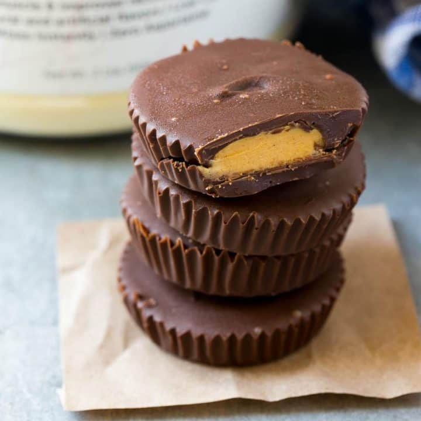

Protein Peanut Butter Cups

Delicious and high protein Peanut butter cups
Ingredients
- 1/3 Cup Smooth peanut butter
- 1 Scoop Scoop Whey Protein vanilla flavour
- 1 ½ Cups Dark chocolate chips
- 1 Tbsp Coconut oil
- 2 cups uncooked instant white rice (for creamier rice, decrease to 1 1/2 cups)
Instructions
- Place 6 paper liners in the wells of a muffin tin and set
- In a small bowl, mix together the protein powder and peanut butter until smooth.
- Place the chocolate chips and coconut oil in a bowl; microwave in 30-second increments until fully melted.
- Place approximately 1 tablespoon of melted chocolate in the bottom of each liner. Place the muffin tin in the freezer for 10 minutes or until chocolate is set.
- Place 2 teaspoons of the peanut butter mixture on top of the chocolate layer.
- Add an additional tablespoon of chocolate on top of the peanut butter mixture. Chill until firm.
- Store in the refrigerator until ready to serve.